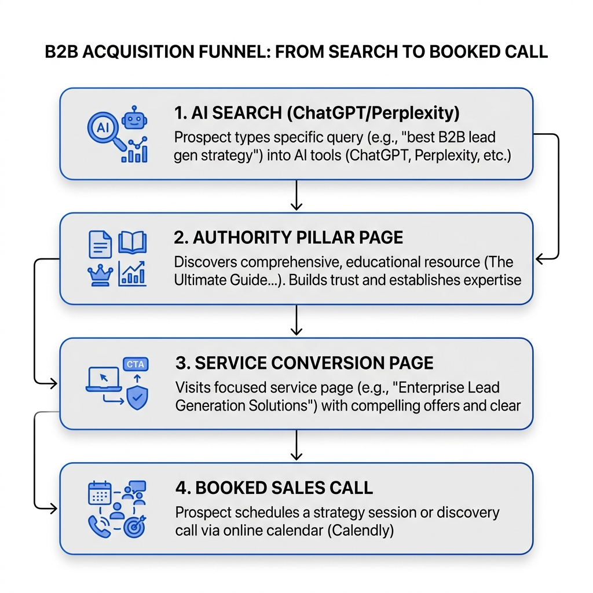

Nuestros Servicios
Construimos un sistema que posiciona a tu marca B2B como la autoridad citada de tu categoría. Sin métricas de vanidad, enfocados en pipeline real.
El Blueprint del Embudo B2B Moderno
Nuestros tres servicios principales operan integrados como una sola máquina lineal que captura la atención del comprador y la convierte en una llamada cualificada.

Contenido de Autoridad Original
Creamos activos de contenido basados en investigación profunda y datos primarios que son imposibles de replicar por inteligencia artificial. Nos encargamos de encuestas, reportes de tendencias anuales y desarrollo de metodologías.
Ver Detalle del Servicio →Qué logras:
- ✓ Datos propios citable por periodistas y competidores.
- ✓ Metodologías únicas que asocian tu nombre al problema.
- ✓ Contenido de alta calidad difícil de imitar por IA.
Visibilidad en Búsqueda e IA (SEO + GEO + AEO)
Optimizamos la presencia digital de tu marca para que sea indexada y recomendada por motores de búsqueda clásicos y de respuesta directa como ChatGPT, Perplexity y Google Gemini.
Ver Detalle del Servicio →Qué logras:
- ✓ Cuota de voz alta en resúmenes de inteligencia artificial.
- ✓ Indexación factual semántica y marcado de datos schema.
- ✓ Posicionamiento en búsquedas conversacionales y de voz.
Distribución B2B Estratégica
Hacemos circular tus ideas allí donde tus compradores toman decisiones: LinkedIn de tus directivos, Slack privados de la industria y podcasts de nicho.
Ver Detalle del Servicio →Qué logras:
- ✓ Marca personal fuerte para tus fundadores en LinkedIn.
- ✓ Presencia sutil pero autoritaria en foros y comunidades.
- ✓ Apariciones estratégicas en podcasts de alta escucha sectorial.
¿Listo para dejar de ser invisible?
Evaluamos tu visibilidad actual en IA de forma gratuita en nuestra llamada de diagnóstico.
Agendar Llamada Diagnóstica